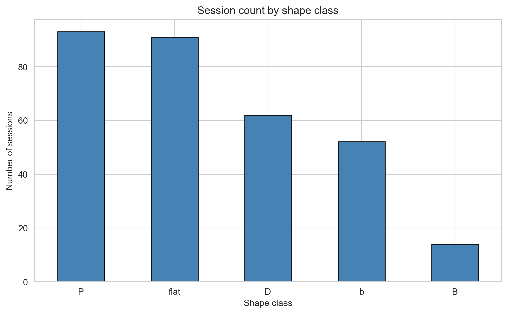
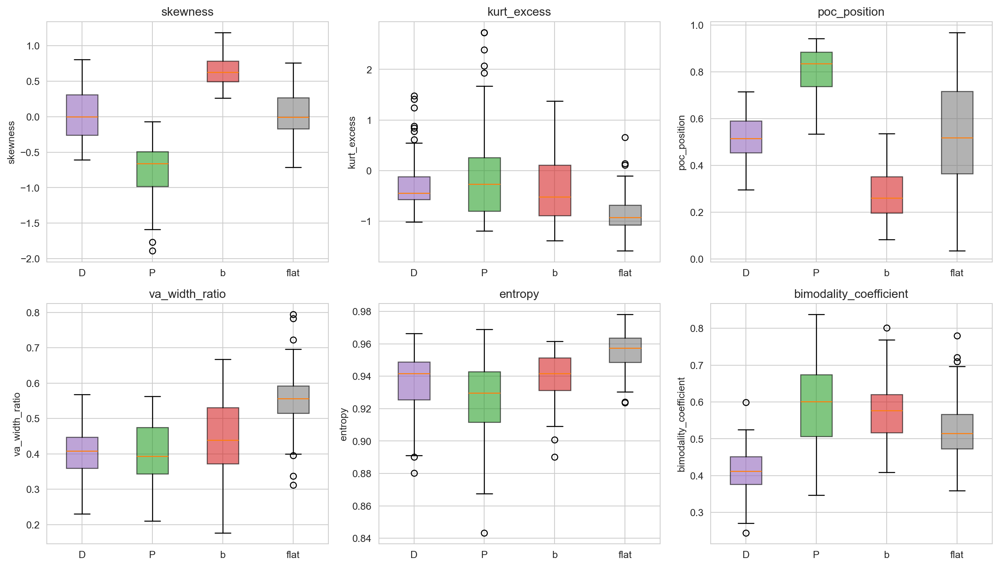
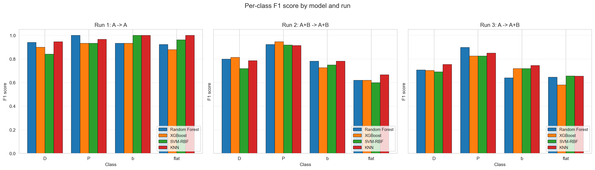
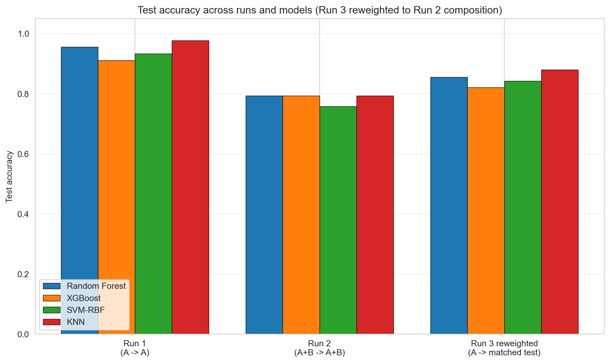
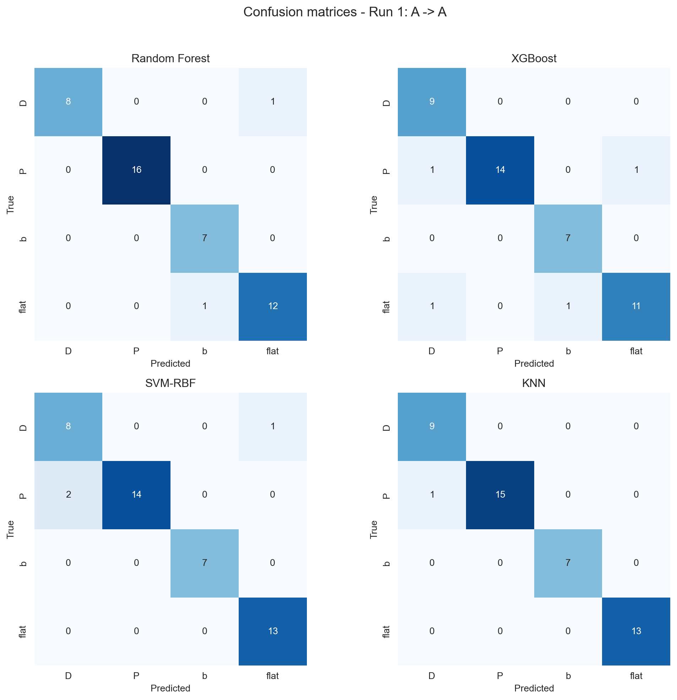
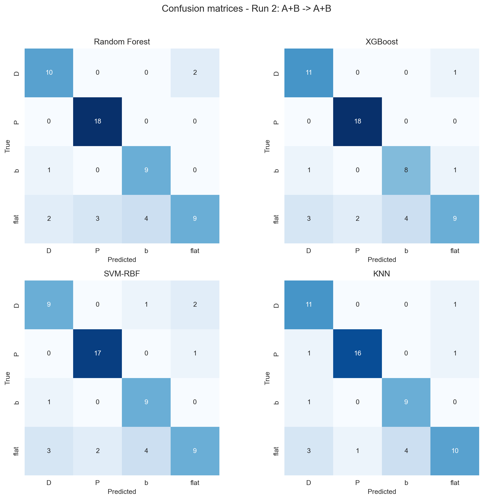
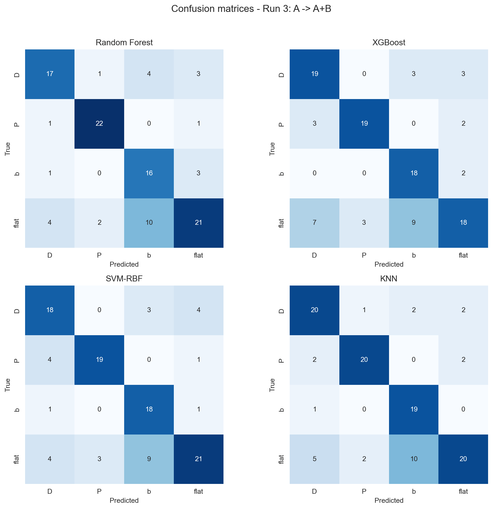

A machine learning research project applying classification models to market profile shapes in NQ futures.
Author
Daniel Vala
Published
April 20, 2026
Overview
This project was completed as part of the BAA1027 Machine Learning and Advanced Python module at DCU. The assignment was a research paper applying machine learning techniques to a problem of my choice.
My research focused on classifying Value Area shapes in the NQ futures market using machine learning. Market profile analysis, introduced by J. Peter Steidlmayer, categorises intraday volume distributions into distinct shapes - D, P, b, and flat profiles - each carrying different implications for traders. Despite the extensive literature on market profile theory, I could not find any published research that applies machine learning to automate this shape classification, which made the topic both original and practically relevant, particularly for algorithmic trading.
The project involved manually labelling a dataset of volume profiles, engineering six statistical features derived from the volume-at-price distribution (such as skewness, kurtosis, and RMS), and training and comparing four classification models.
TipKey Result
The best-performing model, K-Nearest Neighbours, reached an accuracy of 97.9% on clearly defined shapes - demonstrating that statistical features of volume distributions carry strong signal for automated market profile classification.
This project strengthened my skills in applied machine learning, Python programming, data preparation and feature engineering, as well as in structuring and writing a formal research paper.
Research Paper
Data Analysis (Python Notebook)
Classification of Value Area (VA) profile shapes - D, P, b, flat - using machine learning on statistical features of the volume distribution.
Dataset: NQ futures, 2025 and 2026 (up to March 31) sessions, manually labelled with shape and certainty rating (A/B/C). Target: 4-class classification
Setup
Code
# Core libraries for data handling and plottingimport numpy as npimport pandas as pdimport matplotlib.pyplot as pltimport seaborn as snsfrom pathlib import Path# Fixed random seed so train/test splits and SMOTE are reproducible across runsRANDOM_SEED =42np.random.seed(RANDOM_SEED)# File pathsdef resolve_data_dir(): candidates = [ Path("Data"), Path("data"), Path("../../data"), Path("../../data/ml"), Path(r"C:\Users\uzivatel\OneDrive - Dublin City University\ac_Workflow_data_management\Projects\Machine learning\Data" ), ]for candidate in candidates:if candidate.exists():return candidateraiseFileNotFoundError("Could not find the machine learning data directory.")DATA_DIR = resolve_data_dir()PROFILES_PATH = DATA_DIR /'profiles.parquet'LABELS_PATH = DATA_DIR /'data_base.xlsx'# Plotting defaultssns.set_style('whitegrid')pd.set_option('display.max_columns', 20)
Section 1 - Data Loading
Load the volume profile cache and the labelled dataset. Volume profile data has one row per price for particular session, price levels are grouped by 4 ticks, e.g. 1 point. Labelled dataset has one row per session. Join them on session_date so that each labelled session has its corresponding profile data.
The parquet file contains profiles for every trading day in the target period, the labelled dataset excluded some early finished sessions (e.g. Thanksgiving Thursday). Therefore, some days may be missing from labels, so we keep only sessions that appear in both sources.
1.1 Load the volume profile cache
The parquet file has three columns: session_date, price, volume. Each row represents the volume traded at a specific price level during one session.
Code
# Read the parquet file with per-session volume profilesprofiles = pd.read_parquet(PROFILES_PATH)# Normalise dates to midnight - strips any time component that could cause# join mismatches when comparing against the labels fileprofiles['session_date'] = pd.to_datetime(profiles['session_date']).dt.normalize()# Summary of what was loadedprint(f'Profile rows: {len(profiles):,}')print(f'Unique sessions: {profiles["session_date"].nunique()}')print(f'Date range: {profiles["session_date"].min().date()} to {profiles["session_date"].max().date()}')print(f'Columns: {profiles.columns.tolist()}')profiles.head()
Profile rows: 140,870
Unique sessions: 331
Date range: 2025-01-02 to 2026-04-14
Columns: ['session_date', 'price', 'volume']
session_date
price
volume
0
2025-01-02
20984.0
34.0
1
2025-01-02
20985.0
51.0
2
2025-01-02
20986.0
155.0
3
2025-01-02
20987.0
101.0
4
2025-01-02
20988.0
85.0
1.2 Load the labelled dataset
The Excel file has three columns: Date, Shape, Certainty. One row per manually labelled session. We rename the columns to snake_case so they are consistent with the profile dataframe.
Code
# Read the Excel file with manual labelslabels = pd.read_excel(LABELS_PATH)# Rename columns for consistency with the profiles dataframelabels = labels.rename(columns={'Date': 'session_date','Shape': 'label','Certainty': 'certainty',})# Normalise dates the same way as the profiles dataframelabels['session_date'] = pd.to_datetime(labels['session_date']).dt.normalize()# Summary of what was loadedprint(f'Labelled sessions: {len(labels)}')print(f'Date range: {labels["session_date"].min().date()} to {labels["session_date"].max().date()}')print()print('Shape counts:')print(labels['label'].value_counts())print()print('Certainty counts:')print(labels['certainty'].value_counts())
Labelled sessions: 312
Date range: 2025-01-02 to 2026-03-31
Shape counts:
label
P 93
flat 91
D 62
b 52
B 14
Name: count, dtype: int64
Certainty counts:
certainty
A 229
B 69
C 14
Name: count, dtype: int64
1.3 Check for date mismatches
Report how many labelled sessions have a matching profile. Any labelled session without profile data would be a problem - we should know about it before proceeding.
Code
# Convert date columns to sets for fast set operationsprofile_dates =set(profiles['session_date'].unique())label_dates =set(labels['session_date'].unique())# Three-way comparisonmatched = label_dates & profile_dates # present in bothlabels_without_profile = label_dates - profile_dates # labelled but no profile data - badprofiles_without_label = profile_dates - label_dates # profile exists but not labelled - fineprint(f'Labelled sessions: {len(label_dates)}')print(f'Profile-cache sessions: {len(profile_dates)}')print(f'Matched (both sources): {len(matched)}')print(f'Labelled but missing profile: {len(labels_without_profile)}')print(f'Profile but not labelled: {len(profiles_without_label)}')# Warn if any labelled sessions are missing their profile dataif labels_without_profile:print('\nWARNING - labels without profile data:')for d insorted(labels_without_profile):print(f' {d.date()}')
Labelled sessions: 312
Profile-cache sessions: 331
Matched (both sources): 312
Labelled but missing profile: 0
Profile but not labelled: 19
1.4 Build the working dataset
Keep only sessions that exist in both the labels file and the profile cache.
Code
# Keep only sessions that appear in both sourceslabels = labels[labels['session_date'].isin(profile_dates)].copy()profiles = profiles[profiles['session_date'].isin(label_dates)].copy()# Sort for consistent orderinglabels = labels.sort_values('session_date').reset_index(drop=True)profiles = profiles.sort_values(['session_date', 'price']).reset_index(drop=True)# Sanity check - session counts must agree after filteringassert labels['session_date'].nunique() == profiles['session_date'].nunique(), ('Mismatch after filtering - labels and profiles have different session counts')print(f'Final labelled sessions: {len(labels)}')print(f'Final profile rows: {len(profiles):,}')print(f'Sessions in both sources: {labels["session_date"].nunique()}')print()print('Shape x Certainty counts:')print(pd.crosstab(labels['label'], labels['certainty'], margins=True))
Final labelled sessions: 312
Final profile rows: 134,619
Sessions in both sources: 312
Shape x Certainty counts:
certainty A B C All
label
B 4 8 2 14
D 43 16 3 62
P 82 8 3 93
b 37 13 2 52
flat 63 24 4 91
All 229 69 14 312
Section 2 - Feature Extraction
Turn each session’s raw volume profile into a single row of 6 numerical features that describe the shape of the distribution.
Features computed per session:
Feature
What it captures
skewness
Asymmetry of the volume distribution (negative = P-shape, positive = b-shape)
kurt_excess
Peakedness vs tail heaviness (negative = flat/uniform, positive = concentrated)
poc_position
Where the POC sits within the session price range, normalised to [0, 1]
va_width_ratio
Width of the 70% Value Area relative to the full session range, in [0, 1]
entropy
Shannon entropy of the volume distribution, normalised to [0, 1]
bimodality_coefficient
Sarle’s BC based on skewness and kurtosis - high values suggest bimodal shape
The Value Area (VA) is the price range containing approximately 70% of the total session volume. The classification models operate on features derived from this Value Area. The algorithm used to identify it is summarised in the flowchart below.
flowchart TD
A[Start with price/volume data] --> B[Find Point of Control POC:<br/>price with maximum volume]
B --> C[Initialise Value Area<br/>with POC]
C --> D[Compare volume on the side<br/>above and below current range]
D --> E[Expand range to include<br/>the side with higher volume]
E --> F{Accumulated volume<br/>≥ 70% of total?}
F -- No --> D
F -- Yes --> G[Return Value Area Low VAL<br/>and Value Area High VAH]
Code
def compute_value_area(prices: np.ndarray, volumes: np.ndarray, va_percent: float=0.70) ->tuple[float, float, float]:""" Compute the Point of Control (POC) and Value Area bounds (VAL, VAH) for a single session's volume profile. Parameters ---------- prices : np.ndarray Price levels for the session, sorted ascending. volumes : np.ndarray Volume at each corresponding price level. va_percent : float Target percentage of total volume enclosed in the Value Area (default 0.70). Returns ------- (poc_price, val_price, vah_price) """# Find POC - the price level with the maximum traded volume poc_idx =int(np.argmax(volumes)) poc_price =float(prices[poc_idx]) total_volume =float(np.sum(volumes)) target_volume = total_volume * va_percent# Start the Value Area at the POC and expand outward low_idx = poc_idx high_idx = poc_idx accumulated =float(volumes[poc_idx]) n =len(prices)# Keep expanding while we haven't reached the target volumewhile accumulated < target_volume and (low_idx >0or high_idx < n -1):# Volume one step above the current high (0 if out of range) up_vol =float(volumes[high_idx +1]) if high_idx < n -1else-1.0# Volume one step below the current low (0 if out of range) down_vol =float(volumes[low_idx -1]) if low_idx >0else-1.0# Pick whichever side has more volume, expand in that directionif up_vol >= down_vol: high_idx +=1 accumulated += up_vol if up_vol >0else0.0else: low_idx -=1 accumulated += down_vol if down_vol >0else0.0 val_price =float(prices[low_idx]) vah_price =float(prices[high_idx])return poc_price, val_price, vah_price
2.2 Single-session feature extraction
For a given session’s (prices, volumes) arrays, compute all six features. Edge cases return NaN so they can be detected and filtered later.
Code
def extract_features(prices: np.ndarray, volumes: np.ndarray) ->dict:""" Compute the 6-feature vector for a single session's volume profile. Returns a dict with keys: skewness, kurt_excess, poc_position, va_width_ratio, entropy, bimodality_coefficient. NaN is returned for all features if the input is degenerate (empty, single-bin, zero total volume, or zero price range). """# Defensive conversion and basic shape checks x = np.asarray(prices, dtype=float) w = np.asarray(volumes, dtype=float) nan_result = {k: np.nan for k in ['skewness', 'kurt_excess', 'poc_position','va_width_ratio', 'entropy', 'bimodality_coefficient', ]}if x.size <2or x.size != w.size:return nan_result total_w =float(np.sum(w))if total_w <=0:return nan_result# Weighted mean and weighted standard deviation of the price distribution mu =float(np.sum(w * x) / total_w) var =float(np.sum(w * (x - mu) **2) / total_w) sigma =float(np.sqrt(max(var, 1e-12)))# Feature 1: weighted skewness (third standardised moment) skewness =float(np.sum(w * (x - mu) **3) / (total_w * sigma **3+1e-18))# Feature 2: excess kurtosis (fourth standardised moment - 3) kurt_excess =float( np.sum(w * (x - mu) **4) / (total_w * sigma **4+1e-18) -3.0 )# Feature 3: POC position normalised to [0, 1] x_min =float(np.min(x)) x_max =float(np.max(x)) price_range = x_max - x_minif price_range <=0:return nan_result poc_price, val_price, vah_price = compute_value_area(x, w, va_percent=0.70) poc_position = (poc_price - x_min) / price_range# Feature 4: Value Area width ratio in [0, 1] va_width_ratio = (vah_price - val_price) / price_range# Feature 5: Shannon entropy, normalised to [0, 1] p = w / total_w p_pos = p[p >0]if p_pos.size >1: H =-float(np.sum(p_pos * np.log2(p_pos))) H_max =float(np.log2(p_pos.size)) entropy = H / H_max if H_max >0else0.0else: entropy =0.0# Feature 6: Sarle's bimodality coefficient denom = kurt_excess +3.0ifabs(denom) <1e-9: bimodality_coefficient = np.nanelse: bimodality_coefficient = (skewness **2+1.0) / denomreturn {'skewness': skewness,'kurt_excess': kurt_excess,'poc_position': poc_position,'va_width_ratio': va_width_ratio,'entropy': entropy,'bimodality_coefficient': bimodality_coefficient, }
2.3 Apply feature extraction to every session
Group the profiles dataframe by session_date and run extract_features on each group. The result is one row per session with all 6 features as columns.
Code
# Group profile rows by session and compute features for each sessionfeature_rows = []for session_date, group in profiles.groupby('session_date'):# Extract prices and volumes as numpy arrays (already sorted from Section 1.4) prices_arr = group['price'].to_numpy(dtype=float) volumes_arr = group['volume'].to_numpy(dtype=float)# Compute all 6 features for this session feats = extract_features(prices_arr, volumes_arr)# Attach the session date so we can join with labels later feats['session_date'] = session_date feature_rows.append(feats)# Build the feature dataframe with a consistent column orderfeatures_df = pd.DataFrame(feature_rows)feature_cols = ['skewness', 'kurt_excess', 'poc_position','va_width_ratio', 'entropy', 'bimodality_coefficient',]features_df = features_df[['session_date'] + feature_cols]print(f'Feature dataframe shape: {features_df.shape}')features_df.head()
Feature dataframe shape: (312, 7)
session_date
skewness
kurt_excess
poc_position
va_width_ratio
entropy
bimodality_coefficient
0
2025-01-02
-0.159684
-1.089097
0.624506
0.600791
0.977083
0.536657
1
2025-01-03
-0.363839
-0.997540
0.886747
0.486747
0.950806
0.565494
2
2025-01-06
-0.789387
0.669598
0.610979
0.427208
0.931000
0.442319
3
2025-01-07
0.366531
-1.060447
0.323194
0.570342
0.958194
0.584849
4
2025-01-08
-0.611013
0.519384
0.652482
0.329787
0.923582
0.390221
2.4 Merge features with labels
Join the feature dataframe with the labels on session_date. The result is the master dataframe used by all subsequent sections.
Code
# Inner join on session_date - keeps only sessions present in both features and labelsdf = features_df.merge(labels, on='session_date', how='inner')# Sort and reset index for consistencydf = df.sort_values('session_date').reset_index(drop=True)print(f'Master dataframe shape: {df.shape}')print(f'Unique sessions: {df["session_date"].nunique()}')print(f'Columns: {df.columns.tolist()}')print()df.head()
Verify the extracted features are valid before continuing:
No NaN or Inf values
POC position, VA width ratio and entropy are in [0, 1]
Skewness and excess kurtosis are finite
Bimodality coefficient is positive and typically in [0, 1.5]
Code
# Check for missing or infinite feature valuesnan_count = df[feature_cols].isna().sum().sum()inf_count = np.isinf(df[feature_cols].to_numpy()).sum()print(f'NaN values across features: {nan_count}')print(f'Inf values across features: {inf_count}')print()# Check that bounded features stay within their expected rangefor col in ['poc_position', 'va_width_ratio', 'entropy']: min_v = df[col].min() max_v = df[col].max() in_range = df[col].between(0, 1).all()print(f'{col:25s} min={min_v:.4f} max={max_v:.4f} in [0,1]: {in_range}')print()print('Feature summary statistics:')df[feature_cols].describe().round(4)
NaN values across features: 0
Inf values across features: 0
poc_position min=0.0346 max=0.9678 in [0,1]: True
va_width_ratio min=0.1765 max=0.7940 in [0,1]: True
entropy min=0.8433 max=0.9781 in [0,1]: True
Feature summary statistics:
skewness
kurt_excess
poc_position
va_width_ratio
entropy
bimodality_coefficient
count
312.0000
312.0000
312.0000
312.0000
312.0000
312.0000
mean
-0.1075
-0.4404
0.5728
0.4605
0.9398
0.5286
std
0.5725
0.7082
0.2354
0.1106
0.0219
0.1099
min
-1.8910
-1.5871
0.0346
0.1765
0.8433
0.2445
25%
-0.4916
-0.9588
0.3869
0.3805
0.9302
0.4513
50%
-0.1183
-0.5838
0.5859
0.4515
0.9435
0.5150
75%
0.3631
-0.1219
0.7765
0.5425
0.9556
0.6092
max
1.1876
2.7295
0.9678
0.7940
0.9781
0.8374
Section 3 - Exploratory Analysis and Data Preparation
Explore the class distribution and feature space, then act on findings directly. The output of this section is a cleaned dataset and a fixed train/test split ready for model training.
3.1 Class distribution
Look at how many sessions fall into each shape category, and how they split across certainty ratings. This informs decisions about which classes are viable for training and which should be dropped.
Code
# Count how many sessions fall into each shape classshape_counts = df['label'].value_counts()print('Shape counts:')print(shape_counts.to_string())print()# Breakdown of shapes by certainty ratingcert_crosstab = pd.crosstab(df['label'], df['certainty'], margins=True)print('Shape x Certainty:')print(cert_crosstab)# Bar chart of shape countsfig, ax = plt.subplots(figsize=(8, 5))shape_counts.plot(kind='bar', ax=ax, color='steelblue', edgecolor='black')ax.set_xlabel('Shape class')ax.set_ylabel('Number of sessions')ax.set_title('Session count by shape class')ax.set_xticklabels(ax.get_xticklabels(), rotation=0)plt.tight_layout()plt.show()
Shape counts:
label
P 93
flat 91
D 62
b 52
B 14
Shape x Certainty:
certainty A B C All
label
B 4 8 2 14
D 43 16 3 62
P 82 8 3 93
b 37 13 2 52
flat 63 24 4 91
All 229 69 14 312

3.2 Drop B-shape and C-certainty
The distribution above shows two issues:
B-shape class has only 14 samples - below what is needed for reliable classification. The B-shape profile is excluded from training.
C-certainty labels are marked as “unclear” - these are unreliable labels that would inject noise into training. They are removed.
After filtering, we keep only sessions labelled D, P, b, or flat with certainty A or B.
Code
# Remember the total size before filtering for the before/after reportn_before =len(df)# Drop B-shape (too few samples) and C-certainty (unreliable labels)df = df[df['label'] !='B'].copy()df = df[df['certainty'].isin(['A', 'B'])].copy()df = df.reset_index(drop=True)print(f'Sessions before filtering: {n_before}')print(f'Sessions after filtering: {len(df)}')print(f'Dropped: {n_before -len(df)}')print()print('Final class distribution:')print(df['label'].value_counts().to_string())print()print('Final certainty distribution:')print(df['certainty'].value_counts().to_string())
Sessions before filtering: 312
Sessions after filtering: 286
Dropped: 26
Final class distribution:
label
P 90
flat 87
D 59
b 50
Final certainty distribution:
certainty
A 225
B 61
3.3 Feature summary statistics by class
Compute per-class mean and standard deviation for each feature. If the features are informative, we expect to see clear differences across classes.
Code
# Group-by-class mean for each featureper_class_mean = df.groupby('label')[feature_cols].mean().round(4)print('Per-class mean:')print(per_class_mean)print()# Group-by-class standard deviation for each featureper_class_std = df.groupby('label')[feature_cols].std().round(4)print('Per-class std:')print(per_class_std)
Per-class mean:
skewness kurt_excess poc_position va_width_ratio entropy \
label
D 0.0164 -0.2284 0.5151 0.4042 0.9362
P -0.7535 -0.1260 0.8020 0.4012 0.9256
b 0.6525 -0.3780 0.2753 0.4474 0.9393
flat 0.0248 -0.8375 0.5453 0.5492 0.9555
bimodality_coefficient
label
D 0.4092
P 0.5899
b 0.5742
flat 0.5224
Per-class std:
skewness kurt_excess poc_position va_width_ratio entropy \
label
D 0.3310 0.5593 0.0995 0.0752 0.0202
P 0.3695 0.8959 0.1037 0.0913 0.0246
b 0.2139 0.6497 0.1039 0.1019 0.0167
flat 0.3313 0.3852 0.2427 0.0863 0.0119
bimodality_coefficient
label
D 0.0614
P 0.1087
b 0.0940
flat 0.0794
3.4 Correlation heatmap
Pearson correlation matrix between the six features. bimodality_coefficient is mathematically derived from skewness and kurt_excess, so some correlation here was expected, but this was not confirmed.
Code
# Pearson correlation matrix between all feature columnscorr_matrix = df[feature_cols].corr()# Print the full matrix rounded for readabilityprint('Correlation matrix:')print(corr_matrix.round(3))# Heatmap visualisationfig, ax = plt.subplots(figsize=(8, 6))sns.heatmap( corr_matrix, annot=True, fmt='.2f', cmap='coolwarm', center=0, vmin=-1, vmax=1, square=True, linewidths=0.5, ax=ax,)ax.set_title('Feature correlation matrix')plt.tight_layout()plt.show()
Box plots summarise each class with its median, interquartile range, and whiskers extending to the typical data range, with outliers plotted as individual points.
Code
# Fixed colour mapping so the same class always gets the same colour across plotsclass_colors = {'D': 'tab:purple','P': 'tab:green','b': 'tab:red','flat': 'tab:gray',}class_order = ['D', 'P', 'b', 'flat']# 2x3 grid - one boxplot per feature, grouped by classfig, axes = plt.subplots(2, 3, figsize=(14, 8))axes = axes.flatten()for i, col inenumerate(feature_cols): ax = axes[i]# Build the data in fixed class order so the x-axis is always the same data_per_class = [df[df['label'] == cls][col].values for cls in class_order] bp = ax.boxplot( data_per_class, labels=class_order, patch_artist=True, showfliers=True, )# Colour each box to match the class colour mapfor patch, cls inzip(bp['boxes'], class_order): patch.set_facecolor(class_colors[cls]) patch.set_alpha(0.6) ax.set_ylabel(col) ax.set_title(col)plt.tight_layout()plt.show()
C:\Users\uzivatel\AppData\Local\Temp\ipykernel_32736\3206669396.py:18: MatplotlibDeprecationWarning:
The 'labels' parameter of boxplot() has been renamed 'tick_labels' since Matplotlib 3.9; support for the old name will be dropped in 3.11.
C:\Users\uzivatel\AppData\Local\Temp\ipykernel_32736\3206669396.py:18: MatplotlibDeprecationWarning:
The 'labels' parameter of boxplot() has been renamed 'tick_labels' since Matplotlib 3.9; support for the old name will be dropped in 3.11.
C:\Users\uzivatel\AppData\Local\Temp\ipykernel_32736\3206669396.py:18: MatplotlibDeprecationWarning:
The 'labels' parameter of boxplot() has been renamed 'tick_labels' since Matplotlib 3.9; support for the old name will be dropped in 3.11.
C:\Users\uzivatel\AppData\Local\Temp\ipykernel_32736\3206669396.py:18: MatplotlibDeprecationWarning:
The 'labels' parameter of boxplot() has been renamed 'tick_labels' since Matplotlib 3.9; support for the old name will be dropped in 3.11.
C:\Users\uzivatel\AppData\Local\Temp\ipykernel_32736\3206669396.py:18: MatplotlibDeprecationWarning:
The 'labels' parameter of boxplot() has been renamed 'tick_labels' since Matplotlib 3.9; support for the old name will be dropped in 3.11.
C:\Users\uzivatel\AppData\Local\Temp\ipykernel_32736\3206669396.py:18: MatplotlibDeprecationWarning:
The 'labels' parameter of boxplot() has been renamed 'tick_labels' since Matplotlib 3.9; support for the old name will be dropped in 3.11.

3.6 Train/test splits for the two experiments
Section 5 will run two independent experiments:
Run 1 - A-certainty only: use only A-certainty samples (textbook-clear labels). Stratified 80/20 split produces X_train_a / X_test_a.
Run 2 - both A+B-certainty: use both A and B certainty samples (A is clear, B is not textbook but still labelled). Stratified 80/20 split on the larger pool produces X_train_ab / X_test_ab.
Each run evaluates against its own held-out test set drawn from the same labelling standard as its training data.
I decided to do:
Stratified split (stratify=y) so each class is represented proportionally in both train and test, since the classes are imbalanced.
Fixed 80/20 ratio with a reproducible random seed so results are repeatable.
Code
from sklearn.model_selection import train_test_split# Run 1 dataset: A-certainty samples onlydf_a = df[df['certainty'] =='A'].reset_index(drop=True)X_a = df_a[feature_cols].valuesy_a = df_a['label'].values# Stratified 80/20 split on A-certaintyX_train_a, X_test_a, y_train_a, y_test_a = train_test_split( X_a, y_a, test_size=0.20, stratify=y_a, random_state=RANDOM_SEED,)# Run 2 dataset: A and B certainty combineddf_ab = df[df['certainty'].isin(['A', 'B'])].reset_index(drop=True)X_ab = df_ab[feature_cols].valuesy_ab = df_ab['label'].values# Track certainty per row so we can break Run 2 results down by certainty afterwardscert_ab = df_ab['certainty'].values# Stratified 80/20 split via indices so features, labels and certainty stay alignedindices_ab = np.arange(len(df_ab))train_idx_ab, test_idx_ab = train_test_split( indices_ab, test_size=0.20, stratify=y_ab, random_state=RANDOM_SEED,)X_train_ab = X_ab[train_idx_ab]y_train_ab = y_ab[train_idx_ab]X_test_ab = X_ab[test_idx_ab]y_test_ab = y_ab[test_idx_ab]cert_test_ab = cert_ab[test_idx_ab] # certainty label for each Run 2 test sample# B-only samples needed for Run 3 test set constructiondf_b = df[df['certainty'] =='B'].reset_index(drop=True)print('Run 1 (A-only):')print(f' Total samples: {len(df_a)}')print(f' Train size: {len(X_train_a)}')print(f' Test size: {len(X_test_a)}')print(' Train class counts:')print(' ', pd.Series(y_train_a).value_counts().to_dict())print(' Test class counts:')print(' ', pd.Series(y_test_a).value_counts().to_dict())print()print('Run 2 (A+B):')print(f' Total samples: {len(df_ab)}')print(f' Train size: {len(X_train_ab)}')print(f' Test size: {len(X_test_ab)}')print(' Train class counts:')print(' ', pd.Series(y_train_ab).value_counts().to_dict())print(' Test class counts:')print(' ', pd.Series(y_test_ab).value_counts().to_dict())print(' Test certainty mix:')print(' ', pd.Series(cert_test_ab).value_counts().to_dict())
Run 1 (A-only):
Total samples: 225
Train size: 180
Test size: 45
Train class counts:
{'P': 66, 'flat': 50, 'D': 34, 'b': 30}
Test class counts:
{'P': 16, 'flat': 13, 'D': 9, 'b': 7}
Run 2 (A+B):
Total samples: 286
Train size: 228
Test size: 58
Train class counts:
{'P': 72, 'flat': 69, 'D': 47, 'b': 40}
Test class counts:
{'P': 18, 'flat': 18, 'D': 12, 'b': 10}
Test certainty mix:
{'A': 44, 'B': 14}
Section 4 - Models
Define the four classifiers and the training infrastructure.
Four classifiers are compared: Random Forest, XGBoost, SVM with RBF kernel, and K-Nearest Neighbours.
4.1 Model definitions and hyperparameter grids
Each model is defined with baseline parameters and a small hyperparameter grid for GridSearchCV.
Model
Parameters searched
Random Forest
n_estimators, max_depth
XGBoost
n_estimators, max_depth, learning_rate
SVM (RBF)
C, gamma
KNN
n_neighbors, weights
Code
from sklearn.ensemble import RandomForestClassifierfrom sklearn.svm import SVCfrom sklearn.neighbors import KNeighborsClassifierfrom xgboost import XGBClassifierfrom sklearn.preprocessing import LabelEncoder# XGBoost needs integer-encoded labels rather than strings.# Fit a shared label encoder on the full set of valid labels so train/test encodings matchlabel_encoder = LabelEncoder()label_encoder.fit(class_order) # uses the class order defined earlier in Section 3print('Label encoding:')for cls, code inzip(label_encoder.classes_, label_encoder.transform(label_encoder.classes_)):print(f' {cls:5s} -> {code}')# Model definitions with fixed random seeds for reproducibilityrf_model = RandomForestClassifier(random_state=RANDOM_SEED)rf_grid = {'clf__n_estimators': [100, 200, 300],'clf__max_depth': [None, 5, 10],}xgb_model = XGBClassifier( random_state=RANDOM_SEED, eval_metric='mlogloss',)xgb_grid = {'clf__n_estimators': [100, 200, 300],'clf__max_depth': [1, 3, 5, 7],'clf__learning_rate': [0.02, 0.05, 0.1],}svm_model = SVC(kernel='rbf', random_state=RANDOM_SEED, probability=False)svm_grid = {'clf__C': [0.1, 0.5, 1, 5, 10],'clf__gamma': ['scale', 0.1, 1],}knn_model = KNeighborsClassifier()knn_grid = {'clf__n_neighbors': [3, 5, 7, 9],'clf__weights': ['uniform', 'distance'],}# Collect everything so Section 5 can loop over the 4 models cleanly# Each entry: (name, model instance, grid, needs_scaling, needs_label_encoding)models_spec = [ ('Random Forest', rf_model, rf_grid, False, False), ('XGBoost', xgb_model, xgb_grid, False, True), ('SVM-RBF', svm_model, svm_grid, True, False), ('KNN', knn_model, knn_grid, True, False),]print()print(f'{len(models_spec)} models defined.')
Label encoding:
D -> 0
P -> 1
b -> 2
flat -> 3
4 models defined.
4.2 Pipeline assembly (scaling + SMOTE)
Two things need to happen consistently during cross-validation:
Feature scaling for distance-based models (SVM and KNN). Tree ensembles (RF, XGBoost) do not need scaling. Scaling is fit on the training fold only to avoid information leakage from test to train data.
SMOTE resampling for the imbalanced classes. SMOTE uses k-NN internally, so scaling must happen before SMOTE to ensure all features contribute equally to the neighbour search. Both scaling and SMOTE are applied inside the CV loop, only to the training fold, so synthetic samples never end up in the evaluation set.
Code
from imblearn.pipeline import Pipeline as ImbPipelinefrom imblearn.over_sampling import SMOTEfrom sklearn.preprocessing import StandardScalerdef build_pipeline(model, needs_scaling: bool) -> ImbPipeline:# Build pipeline: scaler (if needed) -> SMOTE -> classifier# Scaler goes before SMOTE because SMOTE uses k-NN internally # k_neighbors=3 (instead of default 5) because some folds have small class counts steps = []if needs_scaling: steps.append(('scaler', StandardScaler())) steps.append(('smote', SMOTE(random_state=RANDOM_SEED, k_neighbors=3))) steps.append(('clf', model))return ImbPipeline(steps)
4.3 Training and evaluation helper
Helper function that trains a model with grid search CV and evaluates it on the test set. Returns a dict with metrics, best params and the fitted model.
Macro F1 is used as the optimisation target because the classes are imbalanced and we want each class weighted equally.
Code
from sklearn.model_selection import GridSearchCV, StratifiedKFoldfrom sklearn.metrics import ( accuracy_score, f1_score, confusion_matrix,)def train_and_evaluate( name: str, model, param_grid: dict, needs_scaling: bool, needs_label_encoding: bool, X_train: np.ndarray, y_train: np.ndarray, X_test: np.ndarray, y_test: np.ndarray,) ->dict:""" Train a model with grid search cross-validation and evaluate on the test set. Returns a dict with keys: name, best_params, cv_score, test_accuracy, macro_f1, weighted_f1, per_class_f1, confusion_matrix, estimator """# XGBoost needs integer labels; RF/SVM/KNN can work with string labelsif needs_label_encoding: y_train_enc = label_encoder.transform(y_train) y_test_enc = label_encoder.transform(y_test)else: y_train_enc = y_train y_test_enc = y_test# Assemble pipeline: SMOTE + (scaler if needed) + classifier pipeline = build_pipeline(model, needs_scaling)# Stratified 5-fold CV cv = StratifiedKFold(n_splits=5, shuffle=True, random_state=RANDOM_SEED)# Grid search optimises macro F1 grid = GridSearchCV( pipeline, param_grid=param_grid, scoring='f1_macro', cv=cv, n_jobs=1, refit=True, ) grid.fit(X_train, y_train_enc)# Predict on the held-out test set using the best refit estimator y_pred_enc = grid.predict(X_test)# Decode predictions back to string labels if the model used integer encodingif needs_label_encoding: y_pred = label_encoder.inverse_transform(y_pred_enc) y_test_labels = label_encoder.inverse_transform(y_test_enc)else: y_pred = y_pred_enc y_test_labels = y_test_enc# Compute evaluation metrics test_acc = accuracy_score(y_test_labels, y_pred) macro_f1 = f1_score(y_test_labels, y_pred, average='macro', labels=class_order) weighted_f1 = f1_score(y_test_labels, y_pred, average='weighted', labels=class_order) per_class_f1 = f1_score(y_test_labels, y_pred, average=None, labels=class_order) cm = confusion_matrix(y_test_labels, y_pred, labels=class_order)return {'name': name,'best_params': grid.best_params_,'cv_score': grid.best_score_,'test_accuracy': test_acc,'macro_f1': macro_f1,'weighted_f1': weighted_f1,'per_class_f1': dict(zip(class_order, per_class_f1)),'confusion_matrix': cm,'estimator': grid.best_estimator_,'y_test': y_test_labels,'y_pred': y_pred, }
Section 5 - Training the Experiments
Two main experiments are compared:
Run 1: train on A-certainty samples only, test on A-certainty samples only.
Run 2: train on A+B samples, test on A+B samples.
Finally, I added also Run 3, which will train on A-certainty samples only and test on A+B samples.
5.1 Run 1 - A-only
Train each model on A-certainty samples and evaluate on the A-only test set.
Code
# Loop over all four models and train each one on the A-only dataresults_run1 = []print('='*70)print('Run 1 - A-only experiment')print('='*70)print(f'Train size: {len(X_train_a)} | Test size: {len(X_test_a)}')print()for name, model, grid, needs_scaling, needs_label_enc in models_spec:print(f'Training {name}...') result = train_and_evaluate( name=name, model=model, param_grid=grid, needs_scaling=needs_scaling, needs_label_encoding=needs_label_enc, X_train=X_train_a, y_train=y_train_a, X_test=X_test_a, y_test=y_test_a, ) results_run1.append(result)# One-line progress report per modelprint(f" CV macro F1: {result['cv_score']:.4f}")print(f" Test accuracy: {result['test_accuracy']:.4f}")print(f" Test macro F1: {result['macro_f1']:.4f}")print(f" Best params: {result['best_params']}")print()
======================================================================
Run 1 - A-only experiment
======================================================================
Train size: 180 | Test size: 45
Training Random Forest...
CV macro F1: 0.8338
Test accuracy: 0.9556
Test macro F1: 0.9494
Best params: {'clf__max_depth': None, 'clf__n_estimators': 100}
Training XGBoost...
CV macro F1: 0.8382
Test accuracy: 0.9111
Test macro F1: 0.9117
Best params: {'clf__learning_rate': 0.02, 'clf__max_depth': 5, 'clf__n_estimators': 200}
Training SVM-RBF...
CV macro F1: 0.8516
Test accuracy: 0.9333
Test macro F1: 0.9346
Best params: {'clf__C': 1, 'clf__gamma': 0.1}
Training KNN...
CV macro F1: 0.8251
Test accuracy: 0.9778
Test macro F1: 0.9788
Best params: {'clf__n_neighbors': 3, 'clf__weights': 'uniform'}
5.2 Run 2 - A+B
Same procedure using the larger A+B training pool and the A+B test set.
Code
# Loop over all four models and train each one on the A+B dataresults_run2 = []print('='*70)print('Run 2 - A+B experiment')print('='*70)print(f'Train size: {len(X_train_ab)} | Test size: {len(X_test_ab)}')print()for name, model, grid, needs_scaling, needs_label_enc in models_spec:print(f'Training {name}...') result = train_and_evaluate( name=name, model=model, param_grid=grid, needs_scaling=needs_scaling, needs_label_encoding=needs_label_enc, X_train=X_train_ab, y_train=y_train_ab, X_test=X_test_ab, y_test=y_test_ab, ) results_run2.append(result)# One-line progress report per modelprint(f" CV macro F1: {result['cv_score']:.4f}")print(f" Test accuracy: {result['test_accuracy']:.4f}")print(f" Test macro F1: {result['macro_f1']:.4f}")print(f" Best params: {result['best_params']}")print()
======================================================================
Run 2 - A+B experiment
======================================================================
Train size: 228 | Test size: 58
Training Random Forest...
CV macro F1: 0.8266
Test accuracy: 0.7931
Test macro F1: 0.7816
Best params: {'clf__max_depth': 5, 'clf__n_estimators': 100}
Training XGBoost...
CV macro F1: 0.8255
Test accuracy: 0.7931
Test macro F1: 0.7775
Best params: {'clf__learning_rate': 0.02, 'clf__max_depth': 5, 'clf__n_estimators': 300}
Training SVM-RBF...
CV macro F1: 0.8412
Test accuracy: 0.7586
Test macro F1: 0.7472
Best params: {'clf__C': 10, 'clf__gamma': 'scale'}
Training KNN...
CV macro F1: 0.8305
Test accuracy: 0.7931
Test macro F1: 0.7873
Best params: {'clf__n_neighbors': 5, 'clf__weights': 'distance'}
5.3 Run 3 - Train on A, test on A+B
Reuse the A-only models from Run 1 and evaluate them on a broader test set that includes all B samples (total: 45 A + 61 B = 106 samples).
Code
def evaluate_on_new_test(existing_result, X_test_new, y_test_new, needs_label_encoding):""" Evaluate an already-trained model from a previous run on a new test set. Reuses the fitted estimator and hyperparameters, only recomputes test metrics. """ estimator = existing_result['estimator']# Handle XGBoost integer labels (same pattern as train_and_evaluate)if needs_label_encoding: y_test_enc = label_encoder.transform(y_test_new)else: y_test_enc = y_test_new y_pred_enc = estimator.predict(X_test_new)if needs_label_encoding: y_pred = label_encoder.inverse_transform(y_pred_enc) y_test_labels = label_encoder.inverse_transform(y_test_enc)else: y_pred = y_pred_enc y_test_labels = y_test_enc# Compute the same metrics as train_and_evaluate test_acc = accuracy_score(y_test_labels, y_pred) macro_f1 = f1_score(y_test_labels, y_pred, average='macro', labels=class_order) weighted_f1 = f1_score(y_test_labels, y_pred, average='weighted', labels=class_order) per_class_f1 = f1_score(y_test_labels, y_pred, average=None, labels=class_order) cm = confusion_matrix(y_test_labels, y_pred, labels=class_order)return {'name': existing_result['name'],'best_params': existing_result['best_params'], # carried over from Run 1'cv_score': existing_result['cv_score'], # carried over from Run 1'test_accuracy': test_acc,'macro_f1': macro_f1,'weighted_f1': weighted_f1,'per_class_f1': dict(zip(class_order, per_class_f1)),'confusion_matrix': cm,'estimator': estimator,'y_test': y_test_labels,'y_pred': y_pred, }# Build the Run 3 test set: A held-out samples + all B samplesX_test_r3 = np.vstack([X_test_a, df_b[feature_cols].values])y_test_r3 = np.concatenate([y_test_a, df_b['label'].values])print('='*70)print('Run 3 - Train on A, test on A+B')print('='*70)print(f'Train size: {len(X_train_a)} (same as Run 1) | Test size: {len(X_test_r3)}')print(f'Test composition: {len(X_test_a)} A samples + {len(df_b)} B samples')print()# Reuse Run 1's fitted models and evaluate them on the new test setresults_run3 = []for i, (name, model, grid, needs_scaling, needs_label_enc) inenumerate(models_spec): r1_result = results_run1[i]print(f'Evaluating {name}...') r3_result = evaluate_on_new_test(r1_result, X_test_r3, y_test_r3, needs_label_enc) results_run3.append(r3_result)print(f" Test accuracy: {r3_result['test_accuracy']:.4f}")print(f" Test macro F1: {r3_result['macro_f1']:.4f}")print()
======================================================================
Run 3 - Train on A, test on A+B
======================================================================
Train size: 180 (same as Run 1) | Test size: 106
Test composition: 45 A samples + 61 B samples
Evaluating Random Forest...
Test accuracy: 0.7170
Test macro F1: 0.7231
Evaluating XGBoost...
Test accuracy: 0.6981
Test macro F1: 0.7076
Evaluating SVM-RBF...
Test accuracy: 0.7170
Test macro F1: 0.7237
Evaluating KNN...
Test accuracy: 0.7453
Test macro F1: 0.7517
Per-certainty breakdown for Run 2 and Run 3
Split each run’s test predictions into A and B portions to see which certainty group drives the overall score. Answers whether training on B samples actually helps B-sample classification, and how much it hurts A-sample classification.
Code
# Helper: compute per-certainty accuracy and macro F1 for a masked slicedef split_accuracy(y_true, y_pred, mask):if mask.sum() ==0:returnfloat('nan'), float('nan') acc = accuracy_score(y_true[mask], y_pred[mask]) f1 = f1_score(y_true[mask], y_pred[mask], average='macro', labels=class_order)return acc, f1# Run 2 masks come from cert_test_ab tracked during the split in Section 3.6mask_a_r2 = cert_test_ab =='A'mask_b_r2 = cert_test_ab =='B'n_a_r2 =int(mask_a_r2.sum())n_b_r2 =int(mask_b_r2.sum())# Run 3 masks follow the known construction order: X_test_a first, then df_bn_a_r3 =len(X_test_a)n_b_r3 =len(df_b)cert_test_r3 = np.array(['A'] * n_a_r3 + ['B'] * n_b_r3)mask_a_r3 = cert_test_r3 =='A'mask_b_r3 = cert_test_r3 =='B'print(f'Run 2 test composition: {n_a_r2} A + {n_b_r2} B = {n_a_r2 + n_b_r2} total')print(f'Run 3 test composition: {n_a_r3} A + {n_b_r3} B = {n_a_r3 + n_b_r3} total')print()# Build the combined breakdown table - one row per model with Run 2 and Run 3 side by sidebreakdown_rows = []for r2, r3 inzip(results_run2, results_run3):# Sanity check - the two result lists must share the same model orderingassert r2['name'] == r3['name'], 'Model ordering mismatch between runs'# Run 2 breakdown: slice predictions by certainty of each test row r2_a_acc, _ = split_accuracy(r2['y_test'], r2['y_pred'], mask_a_r2) r2_b_acc, _ = split_accuracy(r2['y_test'], r2['y_pred'], mask_b_r2)# Run 3 breakdown: slice predictions by fixed certainty layout r3_a_acc, _ = split_accuracy(r3['y_test'], r3['y_pred'], mask_a_r3) r3_b_acc, _ = split_accuracy(r3['y_test'], r3['y_pred'], mask_b_r3) breakdown_rows.append({'model': r2['name'],'Run 2 A acc': r2_a_acc,'Run 2 B acc': r2_b_acc,'Run 3 A acc': r3_a_acc,'Run 3 B acc': r3_b_acc,'A gap (R2 - R3)': r2_a_acc - r3_a_acc,'B gap (R2 - R3)': r2_b_acc - r3_b_acc, })breakdown_df = pd.DataFrame(breakdown_rows).round(4)print('Per-certainty breakdown (Run 2 vs Run 3):')breakdown_df
Run 2 test composition: 44 A + 14 B = 58 total
Run 3 test composition: 45 A + 61 B = 106 total
Per-certainty breakdown (Run 2 vs Run 3):
model
Run 2 A acc
Run 2 B acc
Run 3 A acc
Run 3 B acc
A gap (R2 - R3)
B gap (R2 - R3)
0
Random Forest
0.8636
0.5714
0.9556
0.5410
-0.0919
0.0304
1
XGBoost
0.8409
0.6429
0.9111
0.5410
-0.0702
0.1019
2
SVM-RBF
0.8409
0.5000
0.9333
0.5574
-0.0924
-0.0574
3
KNN
0.8409
0.6429
0.9778
0.5738
-0.1369
0.0691
Reweighted comparison: Run 2 vs Run 3 on matching test composition
Run 2 and Run 3 use different test compositions, so their overall scores are not directly comparable. Reweighting Run 3’s per-certainty scores to match Run 2’s A/B ratio produces an estimate of Run 3’s performance on Run 2’s composition, enabling a fairer A-only vs A+B training comparison. I am not reweighting macro F1 score as it is not a linear metric and it would not be mathematically correct.
I am aware that this is still not an apples-to-apples comparison, but I think it is decent for reasonable estimate.
Code
# Target composition = Run 2's test compositionw_a = n_a_r2 # number of A samples in Run 2's test setw_b = n_b_r2 # number of B samples in Run 2's test setw_total = w_a + w_bprint(f'Reweighting to Run 2 composition: {w_a} A + {w_b} B = {w_total} total')print()reweight_rows = []for r2, r3 inzip(results_run2, results_run3):assert r2['name'] == r3['name'], 'Model ordering mismatch between runs'# Run 2 actual overall metrics r2_acc = r2['test_accuracy']# Run 3 per-certainty metrics from the masks built above r3_a_acc, _ = split_accuracy(r3['y_test'], r3['y_pred'], mask_a_r3) r3_b_acc, _ = split_accuracy(r3['y_test'], r3['y_pred'], mask_b_r3)# Reweight Run 3's per-certainty accuracy to Run 2's composition# Accuracy is additive: weighted mean of per-certainty accuracies r3_reweighted_acc = (w_a * r3_a_acc + w_b * r3_b_acc) / w_total reweight_rows.append({'model': r2['name'],'Run 2 accuracy': r2_acc,'Run 3 accuracy (reweighted)': r3_reweighted_acc,'Acc gap (R3 - R2)': r3_reweighted_acc - r2_acc, })reweight_df = pd.DataFrame(reweight_rows).round(4)print('Run 3 (A-only training) reweighted to Run 2 composition vs Run 2 (A+B training):')reweight_df
Reweighting to Run 2 composition: 44 A + 14 B = 58 total
Run 3 (A-only training) reweighted to Run 2 composition vs Run 2 (A+B training):
model
Run 2 accuracy
Run 3 accuracy (reweighted)
Acc gap (R3 - R2)
0
Random Forest
0.7931
0.8555
0.0624
1
XGBoost
0.7931
0.8218
0.0287
2
SVM-RBF
0.7586
0.8426
0.0840
3
KNN
0.7931
0.8803
0.0872
5.4 Combined comparison table
All three runs side by side: CV macro F1, test accuracy, macro F1, weighted F1. Sorted by experiment then macro F1 descending so the best model in each run is at the top of its group.
Code
# Helper to turn a list of result dicts into a tidy DataFramedef results_to_dataframe(results: list, experiment_name: str) -> pd.DataFrame: rows = []for r in results: rows.append({'experiment': experiment_name,'model': r['name'],'cv_macro_f1': r['cv_score'],'test_accuracy': r['test_accuracy'],'test_macro_f1': r['macro_f1'],'test_weighted_f1': r['weighted_f1'], })return pd.DataFrame(rows)# Build and concatenate the three experiment DataFramesdf_run1 = results_to_dataframe(results_run1, 'Run 1: A -> A')df_run2 = results_to_dataframe(results_run2, 'Run 2: A+B -> A+B')df_run3 = results_to_dataframe(results_run3, 'Run 3: A -> A+B')comparison = pd.concat([df_run1, df_run2, df_run3], ignore_index=True)# Sort by experiment (preserving run order) then by macro F1 descendingcomparison = comparison.sort_values( ['experiment', 'test_macro_f1'], ascending=[True, False],).reset_index(drop=True)print('Combined comparison (sorted by test macro F1 within each experiment):')comparison.round(4)
Combined comparison (sorted by test macro F1 within each experiment):
experiment
model
cv_macro_f1
test_accuracy
test_macro_f1
test_weighted_f1
0
Run 1: A -> A
KNN
0.8251
0.9778
0.9788
0.9780
1
Run 1: A -> A
Random Forest
0.8338
0.9556
0.9494
0.9556
2
Run 1: A -> A
SVM-RBF
0.8516
0.9333
0.9346
0.9340
3
Run 1: A -> A
XGBoost
0.8382
0.9111
0.9117
0.9113
4
Run 2: A+B -> A+B
KNN
0.8305
0.7931
0.7873
0.7881
5
Run 2: A+B -> A+B
Random Forest
0.8266
0.7931
0.7816
0.7795
6
Run 2: A+B -> A+B
XGBoost
0.8255
0.7931
0.7775
0.7806
7
Run 2: A+B -> A+B
SVM-RBF
0.8412
0.7586
0.7472
0.7497
8
Run 3: A -> A+B
KNN
0.8251
0.7453
0.7517
0.7402
9
Run 3: A -> A+B
SVM-RBF
0.8516
0.7170
0.7237
0.7152
10
Run 3: A -> A+B
Random Forest
0.8338
0.7170
0.7231
0.7167
11
Run 3: A -> A+B
XGBoost
0.8382
0.6981
0.7076
0.6915
Section 6 - Results Visualisation and Analysis
Visualise the Section 5 results.
6.1 F1 score breakdown
Per-class F1 bars (one panel per run) to show class-level performance, plus a macro F1 summary chart across all runs and models.
Code
def plot_per_class_f1(results_list, title: str, ax):""" Grouped bar chart of per-class F1 scores. X-axis is class, and each class group contains one bar per model in the results list. """ n_classes =len(class_order) n_models =len(results_list) bar_width =0.8/ n_models x_positions = np.arange(n_classes)# Distinct colour per model for this grouped bar plot model_palette = ['tab:blue', 'tab:orange', 'tab:green', 'tab:red']for m_idx, result inenumerate(results_list): f1_values = [result['per_class_f1'][cls] for cls in class_order] offset = (m_idx - n_models /2+0.5) * bar_width ax.bar( x_positions + offset, f1_values, bar_width, label=result['name'], color=model_palette[m_idx], edgecolor='black', linewidth=0.5, ) ax.set_xticks(x_positions) ax.set_xticklabels(class_order) ax.set_ylim(0, 1.05) ax.set_ylabel('F1 score') ax.set_xlabel('Class') ax.set_title(title) ax.legend(fontsize=9, loc='lower right') ax.grid(axis='y', alpha=0.3)# Three subplots side-by-side, one per runfig, axes = plt.subplots(1, 3, figsize=(18, 5), sharey=True)plot_per_class_f1(results_run1, 'Run 1: A -> A', axes[0])plot_per_class_f1(results_run2, 'Run 2: A+B -> A+B', axes[1])plot_per_class_f1(results_run3, 'Run 3: A -> A+B', axes[2])plt.suptitle('Per-class F1 score by model and run', fontsize=14, y=1.02)plt.tight_layout()plt.show()

Code
# Compute Run 3 reweighted accuracy so it can be compared with Run 2.# Run 3 actual scores are biased low because B samples dominate its test set.# Reweighting to Run 2's composition removes that bias.# Note: only accuracy is reweighted (macro F1 is non-linear and cannot be# validly reweighted as a simple weighted average).w_total = n_a_r2 + n_b_r2run3_reweighted_acc = []for r3 in results_run3: r3_a_acc, _ = split_accuracy(r3['y_test'], r3['y_pred'], mask_a_r3) r3_b_acc, _ = split_accuracy(r3['y_test'], r3['y_pred'], mask_b_r3) rw = (n_a_r2 * r3_a_acc + n_b_r2 * r3_b_acc) / w_total run3_reweighted_acc.append(rw)# Per-run accuracy values: Run 1 and Run 2 use their native test sets,# Run 3 uses the reweighted estimate so all three are on the same composition baselinerun_labels = ['Run 1\n(A -> A)','Run 2\n(A+B -> A+B)','Run 3 reweighted\n(A -> matched test)',]model_names = [r['name'] for r in results_run1]n_runs =len(run_labels)n_models =len(model_names)acc_matrix = np.zeros((n_runs, n_models))for m_idx inrange(n_models): acc_matrix[0, m_idx] = results_run1[m_idx]['test_accuracy'] # native acc_matrix[1, m_idx] = results_run2[m_idx]['test_accuracy'] # native acc_matrix[2, m_idx] = run3_reweighted_acc[m_idx] # reweighted# Grouped bar chart: one group per run, one bar per model within each groupmodel_palette = ['tab:blue', 'tab:orange', 'tab:green', 'tab:red']bar_width =0.8/ n_modelsx_positions = np.arange(n_runs)fig, ax = plt.subplots(figsize=(10, 6))for m_idx, name inenumerate(model_names): offset = (m_idx - n_models /2+0.5) * bar_width ax.bar( x_positions + offset, acc_matrix[:, m_idx], bar_width, label=name, color=model_palette[m_idx], edgecolor='black', linewidth=0.5, )ax.set_xticks(x_positions)ax.set_xticklabels(run_labels)ax.set_ylim(0, 1.05)ax.set_ylabel('Test accuracy')ax.set_title('Test accuracy across runs and models (Run 3 reweighted to Run 2 composition)')ax.legend(loc='lower left', fontsize=10)ax.grid(axis='y', alpha=0.3)plt.tight_layout()plt.show()

6.2 Confusion matrices
Raw-count confusion matrices for every model in every run. Rows are true class, columns are predicted class, diagonal is correct.
Code
def plot_confusion_matrices(results_list, run_title: str):""" Plot a 2x2 grid of confusion matrices, one per model in the results list. Uses raw counts and a consistent colour scale across the grid. """ fig, axes = plt.subplots(2, 2, figsize=(11, 10)) axes = axes.flatten()# Use a shared colour scale across all 4 matrices in this run vmax =max(r['confusion_matrix'].max() for r in results_list)for idx, result inenumerate(results_list): ax = axes[idx] cm = result['confusion_matrix'] sns.heatmap( cm, annot=True, fmt='d', cmap='Blues', vmin=0, vmax=vmax, xticklabels=class_order, yticklabels=class_order, cbar=False, square=True, ax=ax, ) ax.set_xlabel('Predicted') ax.set_ylabel('True') ax.set_title(result['name']) fig.suptitle(f'Confusion matrices - {run_title}', fontsize=14, y=1.02) plt.tight_layout() plt.show()plot_confusion_matrices(results_run1, 'Run 1: A -> A')plot_confusion_matrices(results_run2, 'Run 2: A+B -> A+B')plot_confusion_matrices(results_run3, 'Run 3: A -> A+B')



6.3 Feature importance
Random Forest and XGBoost feature importance for Run 1 and Run 2. SVM and KNN are skipped because they do not expose built-in feature importances. Run 3 is skipped because it reuses Run 1’s estimators unchanged.
Code
def get_importances(results_list, model_name: str) -> pd.DataFrame:"""Extract feature importances from a model's fitted pipeline in a given run.""" result =next(r for r in results_list if r['name'] == model_name) clf = result['estimator'].named_steps['clf']return pd.DataFrame({'feature': feature_cols,'importance': clf.feature_importances_, }).sort_values('importance', ascending=True)def plot_importance_run1_vs_run2(model_name: str):"""Side-by-side horizontal bar charts of Run 1 vs Run 2 importance for one model.""" imp_run1 = get_importances(results_run1, model_name) imp_run2 = get_importances(results_run2, model_name)print(f'Run 1 - {model_name} feature importance (trained on A-only):')print(imp_run1.iloc[::-1].round(4).to_string(index=False))print()print(f'Run 2 - {model_name} feature importance (trained on A+B):')print(imp_run2.iloc[::-1].round(4).to_string(index=False)) fig, axes = plt.subplots(1, 2, figsize=(14, 5), sharex=True)for ax, imp_df, title inzip( axes, [imp_run1, imp_run2], ['Run 1 (A-only training)', 'Run 2 (A+B training)'], ): ax.barh( imp_df['feature'], imp_df['importance'], color='steelblue', edgecolor='black', linewidth=0.5, ) ax.set_xlabel('Importance') ax.set_title(title) ax.grid(axis='x', alpha=0.3) plt.suptitle(f'{model_name} feature importance', fontsize=14, y=1.02) plt.tight_layout() plt.show()# Random Forest feature importanceplot_importance_run1_vs_run2('Random Forest')# XGBoost feature importanceplot_importance_run1_vs_run2('XGBoost')
Run 1 - Random Forest feature importance (trained on A-only):
feature importance
skewness 0.3180
poc_position 0.2408
bimodality_coefficient 0.1478
va_width_ratio 0.1435
entropy 0.0791
kurt_excess 0.0708
Run 2 - Random Forest feature importance (trained on A+B):
feature importance
skewness 0.3303
poc_position 0.2241
bimodality_coefficient 0.1544
va_width_ratio 0.1479
kurt_excess 0.0844
entropy 0.0588